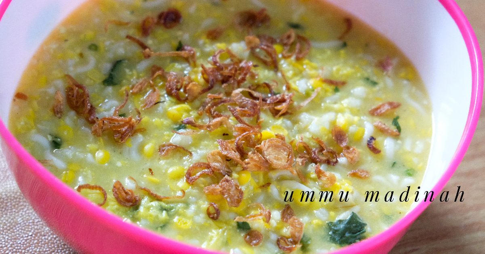

<< Daftar Resep
Kuliner Khas Makassar - Barobbo
bahan |
cara membuat

Barobbo
Barobbo adalah salah satu makanan khas makassar atau biasa kita sebut juga bubur jagung. Bisa untuk 8 sampai 10 orang.
Bahan- bahan :
- 8 jagung kuning, serut halus
- 1 cup beras
- 2 ikat kangkung, siangi daun dan batangnya
- 1 ikat bayam merah, siangi daun dan batangnya
- 300 gr labu kuning, potong kotak
- Daun kemangi
- 300 gr udang, buang kepala dan kulitnya
- 1 batang besar daun bawang, iris tipis
- 5 liter air
- Garam
- Ikan asin goreng
- Sambal
- 1 buah tomat ukuran sedang
- 15 cabe rawit
- 1 sdt garam
Langkah
- Masukkan sekitar 1-2 liter air ke dalam panci, masukkan beras. Masak hingga mengembang
- Masukkan sisa air dan jagung. Masak hingga setengah matang
- Masukkan labu, masak hingga labu menjadi lunak. Jangan lupa diaduk hingga ke dasar agar tidak hangus di bagian bawah.
- Masukkan kangkung, daun bawang, bayam dan kemangi. Masak hingga layu. Jangan lupa tetap diaduk.
- Masukkan garam, cek rasa. Matikan kompor.
- Ulek semua bahan sambal hingga halus.
- Sajikan barobbo dengan ikan asin goreng, jeruk nipis dan sambal.
Kembali ke atas
<< Daftar Resep